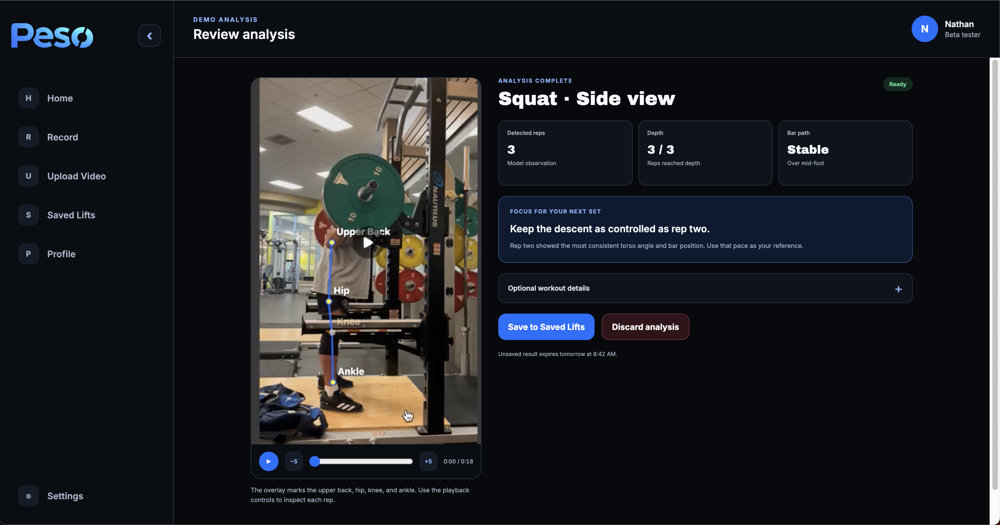

Join beta or sign in
Public calls to action open the matching /app route.
Athlete flow · Planned Web Beta
The planned beta replaces the current simulated submission path with owner-checked uploads, durable jobs, recoverable progress, real results, and the shared Saved Lift Library.

Account entry
Public calls to action open the matching /app route.
Signup includes beta eligibility and terms. Email verification may be required.
Show submission choices, rolling web capacity, active jobs, pending reviews, and recent Saved Lifts.
Real analysis path
Select one squat set from the browser device.
Check type, size, duration, view, full-body visibility, and supported capabilities.
An accepted Analysis Job consumes one of three rolling 24-hour slots.
The API records an owner-scoped job and enqueues durable work transactionally.
The browser polls the database-backed job. Leaving the page does not erase progress.
Playback, Detected Reps, depth, bar path, Lift Insights, and coaching appear together.
Save with optional workout facts, or remove the unsaved result before expiry.
Browse the same saved history available in the mobile app.
Job outcomes
The planned beta distinguishes a user submission from a system failure.
Save the result or allow the completed unsaved result to expire.
The submitted clip consumed analysis capacity even when it cannot produce a useful result.
System failures retry up to three times and restore quota after the final failure.
If processing has already claimed the job, the cancellation loses the race and returns a conflict.
Separate path
The prototype demonstrates the experience without pretending that simulated progress is a server job.
The browser creates a temporary object URL and local thumbnail.
Queued and analyzing states advance locally.
The review screen uses packaged demo media and metrics.
Shared library
Presentation changes without changing library membership.
Choose Saved Lifts for one action.
Poll the owner-scoped export job and download it before expiry.
The same lifts disappear from mobile and web.